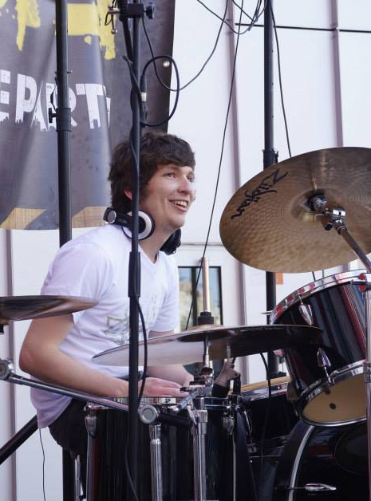

Selecciona un proyecto del menú para explorar

Transformación de entornos sonoros mediante convergencia entre ciencia, consultoría técnica e I+D.
Ingeniero de Sonido con Máster en Ingeniería Acústica, especializado en diseño arquitectónico, control de ruido y procesamiento digital de señales (DSP). Experto en simulación y auralización avanzada mediante Raytracing, FEM y FDTD. Cuento con una sólida trayectoria en la conceptualización y ejecución de proyectos de acondicionamiento acústico, integración de sistemas AV profesionales (Dante) y desarrollo de tecnología electroacústica y sensores ultrasónicos. Además, integro IoT (Arduino/Raspberry Pi/ESP32), Machine Learning y desarrollo de software aplicados a la innovación y la creación de productos digitales. Profesional apasionado por la Investigación y el desarrollo, la docencia y la transformación tecnológica.
Selecciona un proyecto del menú para explorar